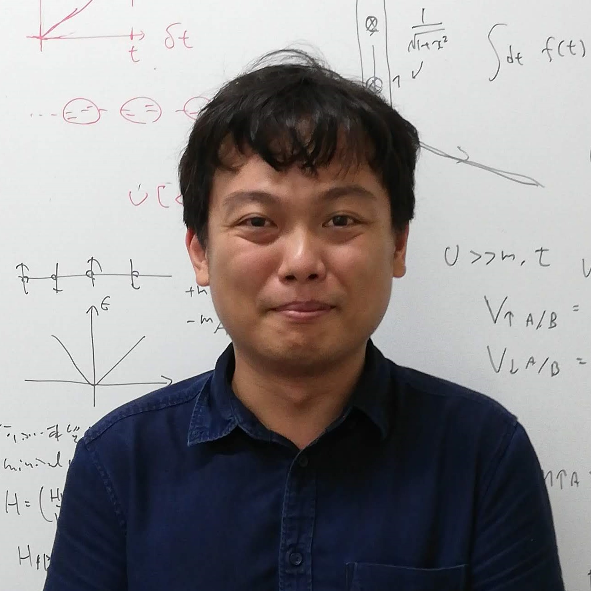

Research Associate, University of Tokyo
東京大学大学院 工学系研究科 物理工学専攻 森本研究室 助教
kitamura 0x40 ap.t.u-tokyo.ac.jp
7-3-1 Hongo, Bunkyo-ku, Tokyo 113-8656 Japan
〒113-8656 東京都文京区本郷7-3-1 工学部6号館221号室
Research Interests:
condensed matter theory, nonequilibrium quantum systems, nonperturbative transport, Floquet engineering
| 2008年03月 | 岡山県立岡山朝日高校卒業 |
| 2012年03月 | 東京大学理学部物理学科卒業 |
| 2014年03月 | 東京大学大学院理学系研究科物理学専攻 修士課程修了 |
| 2017年03月 | 東京大学大学院理学系研究科物理学専攻 博士課程修了 |
| 2012年10月 - 2017年03月 | フォトンサイエンス・リーディング大学院 (ALPS) コース生 |
| 2017年04月 - 2019年03月 | マックスプランク複雑系物理学研究所 博士研究員 |
| 2019年04月 - | 東京大学大学院工学系研究科物理工学専攻 森本研究室 助教 |
Ph.D thesis:
“Theoretical study of exotic quantum phases in periodically-driven systems”
(周期駆動系における新奇量子相の理論的研究)
Adviser: Prof. Hideo Aoki (2014-2015), Prof. Shinji Tsuneyuki (2016)
Master thesis:
“First principles band calculation for cold atom systems in optical lattices”
(光学格子上の冷却原子系に対する第一原理バンド計算)
Adviser: Prof. Hideo Aoki
Yuya Ikeda, Sota Kitamura, and Takahiro Morimoto:
“Controllable photocurrent generation in Dirac systems with two frequency drives”,
arXiv:2406.14881.
Ibuki Terada, Sota Kitamura, Hiroshi Watanabe, and Hiroaki Ikeda:
“Limitations and improvements of the relaxation time approximation in the quantum master equation: Linear conductivity in insulating systems”,
Phys. Rev. B 109, L180302 (2024).
[arXiv]
Takahiro Anan, Takahiro Morimoto, and Sota Kitamura:
“Time-dependent Gutzwiller simulation of Floquet topological superconductivity”,
Commun. Phys. 7, 99 (2024).
[arXiv]
Mao Yoshii, Sota Kitamura, and Takahiro Morimoto:
“Efficient momentum space approach to superconductivity in quasiperiodic systems”,
arXiv:2312.09124.
Yuya Ikeda, Sota Kitamura, and Takahiro Morimoto:
“Photocurrent Induced by a Bicircular Light Drive in Centrosymmetric Systems”,
Phys. Rev. Lett. 131, 096301 (2023).
Editors’ Suggestion [arXiv] [Synopsis]
Takahiro Morimoto, Sota Kitamura, and Naoto Nagaosa:
“Geometric aspects of nonlinear and nonequilibrium phenomena”,
J. Phys. Soc. Jpn. 92, 072001 (2023).
Invited review papers [arXiv] [Movie]
Mao Yoshii, Sota Kitamura, and Takahiro Morimoto:
“Gap labeling theorem for multilayer thin film heterostructures”,
Phys. Rev. B 107, 064201 (2023).
[arXiv]
Kosuke Fujiwara, Sota Kitamura, and Takahiro Morimoto:
“Nonlinear spin current of photoexcited magnons in collinear antiferromagnets”,
Phys. Rev. B 107, 064403 (2023).
Editors’ Suggestion [arXiv]
Y. Dong*, M.-M. Yang*, M. Yoshii, S. Matsuoka, S. Kitamura, T. Hasegawa, N. Ogawa, T. Morimoto, T. Ideue, and Y. Iwasa:
“Giant bulk piezophotovoltaic effect in 3R-MoS2“,
Nat. Nanotechnol. 18, 36 (2023).
[プレスリリース]
Kosuke Fujiwara, Sota Kitamura, and Takahiro Morimoto:
“Thermal Hall responses in frustrated honeycomb spin systems”,
Phys. Rev. B 106, 035113 (2022).
[arXiv]
Sota Kitamura and Hideo Aoki:
“Floquet topological superconductivity induced by chiral many-body interaction”,
Commun. Phys. 5, 174 (2022).
[arXiv]
Takumi Kamatani, Sota Kitamura, Naoto Tsuji, Ryo Shimano, and Takahiro Morimoto:
“Optical response of the Leggett mode in multiband superconductors in the linear response regime”,
Phys. Rev. B 105, 094520 (2022).
[arXiv]
Yuya Ikeda, Sota Kitamura, and Takahiro Morimoto:
“Floquet engineering of electric polarization with two-frequency drive”,
Prog. Theor. Exp. Phys. 2022, 04A101 (2022).
[arXiv]
Mao Yoshii, Sota Kitamura, and Takahiro Morimoto:
“Topological charge pumping in quasiperiodic systems characterized by Bott index”,
Phys. Rev. B 104, 155126 (2021).
Editors’ Suggestion [arXiv]
Takahiro Morimoto*, Sota Kitamura*, and Shun Okumura:
“Electric polarization and nonlinear optical effects in noncentrosymmetric magnets”,
Phys. Rev. B 104, 075139 (2021).
Editors’ Suggestion [arXiv]
T. Akamatsu*, T. Ideue*, L. Zhou*, Y. Dong, S. Kitamura, M. Yoshii, D. Yang, M. Onga, Y. Nakagawa, K. Watanabe, T. Taniguchi, J. Laurienzo, J. Huang, Z. Ye, T. Morimoto, H. Yuan, and Y. Iwasa:
“A van der Waals interface that creates in-plane polarization and a spontaneous photovoltaic effect”,
Science 372, 68 (2021).
[プレスリリース]
Sota Kitamura, Naoto Nagaosa, and Takahiro Morimoto:
“Current response of nonequilibrium steady states in Landau-Zener problem: Nonequilibrium Green’s function approach”,
Phys. Rev. B 102, 245141 (2020).
[arXiv]
Sota Kitamura, Naoto Nagaosa, and Takahiro Morimoto:
“Nonreciprocal Landau-Zener tunneling”,
Commun. Phys. 3, 63 (2020).
[arXiv]
V. Sunko*, F. Mazzola*, S. Kitamura*, S. Khim, P. Kushwaha, O. J. Clark, M. Watson, I. Marković, D. Biswas, L. Pourovskii, T. K. Kim, T.-L. Lee, P. K. Thakur, H. Rosner, A. Georges, R. Moessner, T. Oka, A. P. Mackenzie, and P. D. C. King:
“Probing spin correlations using angle resolved photoemission in a coupled metallic/Mott insulator system”,
Sci. Adv. 6, eaaz0611 (2020).
[arXiv]
H. Usui, M. Ochi, S. Kitamura, T. Oka, D. Ogura, H. Rosner, M. W. Haverkort, V. Sunko, P. D. C. King, A. P. Mackenzie, and K. Kuroki:
“Hidden Kagome-lattice picture and origin of high conductivity in delafossite PtCoO2“,
Phys. Rev. Mat. 3, 045002 (2019).
Editors’ Suggestion [arXiv]
Takashi Oka and Sota Kitamura:
“Floquet Engineering of Quantum Materials”,
Ann. Rev. Cond. Mat. Phys. 10, 387-408 (2019).
[arXiv]
S. Kitamura, H. Usui, R.-J. Slager, A. Bouhon, V. Sunko, H. Rosner, P. D. C. King, J. Orenstein, R. Moessner, A. P. Mackenzie, K. Kuroki, and T. Oka:
“Spin Hall effect in 2D metallic delafossite PtCoO2 and vicinity topology”,
arXiv:1811.03105.
Chanchal Sow, Shingo Yonezawa, Sota Kitamura, Takashi Oka, Kazuhiko Kuroki, Fumihiko Nakamura, and Yoshiteru Maeno:
“Current-induced strong diamagnetism in the Mott insulator Ca2RuO4“,
Science 358, 1084-1087 (2017).
[arXiv] [プレスリリース] [日刊工業新聞]
This article has been retracted: see Science 368, 376 (2020)
Leda Bucciantini, Sthitadhi Roy, Sota Kitamura, and Takashi Oka:
“Emergent Weyl nodes and Fermi arcs in a Floquet Weyl semimetal”,
Phys. Rev. B 96, 041126(R) (2017).
[arXiv]
Sota Kitamura, Takashi Oka, and Hideo Aoki:
“Probing and controlling spin chirality in Mott insulators by circularly polarized laser”,
Phys. Rev. B 96, 014406 (2017).
[arXiv]
Sota Kitamura and Hideo Aoki:
”$\eta$-pairing superfluid in periodically-driven fermionic Hubbard model with strong attraction”,
Phys. Rev. B 94, 174503 (2016).
[arXiv]
Takahiro Mikami, Sota Kitamura, Kenji Yasuda, Naoto Tsuji, Takashi Oka, and Hideo Aoki:
“Brillouin-Wigner theory for high-frequency expansion in periodically driven systems: Application to Floquet topological insulators”,
Phys. Rev. B 93, 144307 (2016).
[arXiv] [Erratum]
Sota Kitamura, Naoto Tsuji, and Hideo Aoki:
“Interaction-Driven Topological Insulator in Fermionic Cold Atoms on an Optical Lattice: A Design with a Density Functional Formalism”,
Phys. Rev. Lett. 115, 045304 (2015).
[arXiv]
北村想太, 青木秀夫:
“円偏光で誘起するトポロジカル超伝導の理論――非平衡での強相関効果”,
日本物理学会誌 78, 404 (2023)
北村想太:
“周期駆動量子系の物理”,
物性若手夏の学校テキスト 1, 81 (2023).